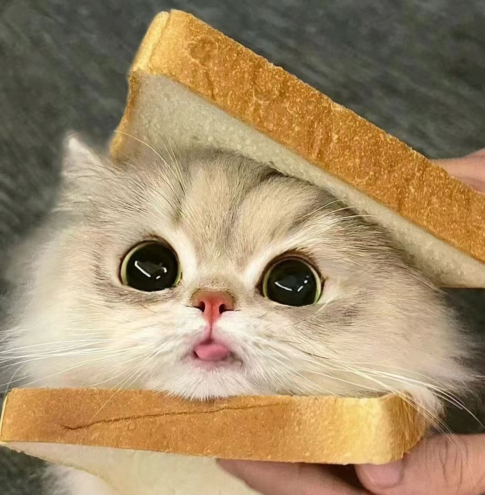
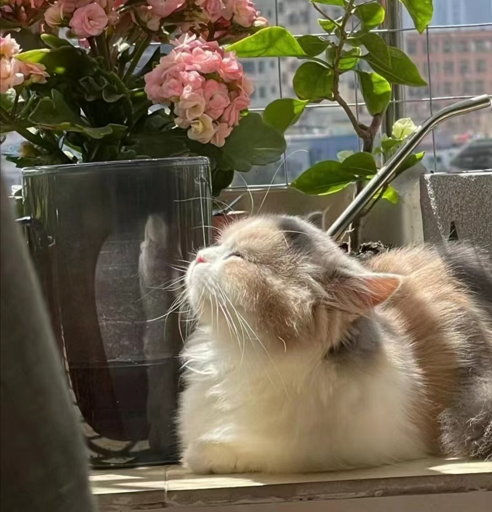
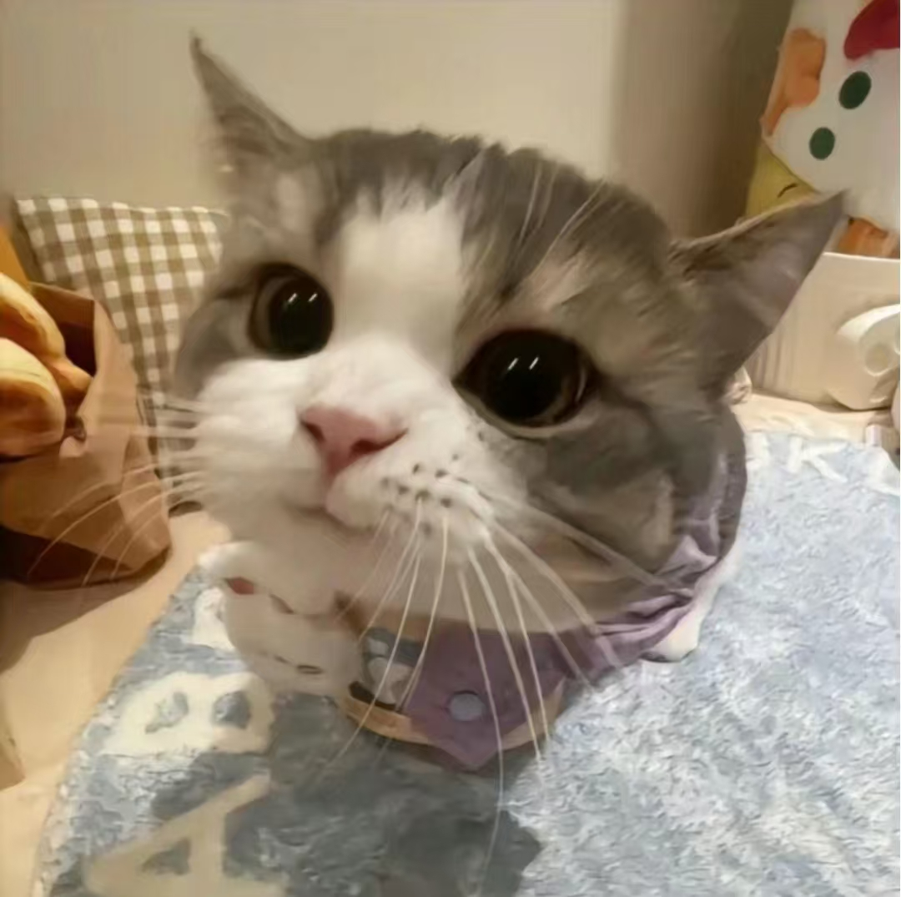

Cute Cat

为什么人类难以抵抗猫咪的可爱？
- 外观特征：猫咪通常拥有大眼睛、圆润的脸庞和柔软的毛发，这些特征恰好契合了人类对可爱的定义，激发出人们内心的亲近感和保护欲望。
- 行为举止：猫咪的一些行为举止，如蹲坐、摇动尾巴、自我梳理等，都显得无比可爱。它们独特的喵喵叫声也常常令人陶醉。
- 亲社交性：尽管每只猫咪都有其独特的个性，但它们通常会向人类展示出亲密的行为，比如用头蹭人、踩奶或是撒娇等，这些互动加深了人与猫之间的情感联系。
- 适应能力：猫咪作为一种适应能力极强的动物，能够在多种环境中生存下来，这种能力也让它们显得格外特别和可爱。
- 文化特征：在许多文化中，猫被赋予了吉祥、神秘甚至神圣的象征意义，这些文化背景也影响了人们对猫的看法。
以上分析来自：为什么人类难以抵抗猫咪的可爱？揭秘背后的科学原因！

